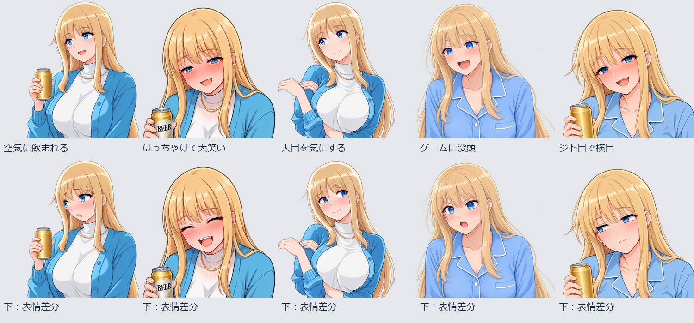

複数人で宅飲み：人物別の配置・引き戸・表情
全12案は、背景＋女性1人＋男性3人＋小物の重ね合わせです。キス・ハグ・膝への横座りにも別の男子が同席しています。男女はそれぞれ単独の透過PNG。下のチェックを外すと分離を確認できます。
人物と背景を個別に表示
引き戸：開
場面PNG（扉：開の確認用合成）
人物の移動は画像の配置座標で管理。手持ちの缶・グラス・コントローラーは各人物PNGに含まれます。チェックによる表示切替はこの確認ページの機能で、ゲームへの実装はまだです。この場面の独立素材・配置座標
場面12案
A1 右のソファー・空気に飲まれる
男性3人と同席。ヒロインを短身の成人として小さく配置。
場面PNGA2 絨毯に移って、赤ら顔で会話
既存の座り酔い画像を再利用。男性より小さく。
場面PNGA3 パジャマで床飲み
粉青の上下パジャマ、赤ら顔と笑顔。
場面PNGA4 はっちゃけて大笑い
A2と同じ構図で表情のみ変更。参照ref-08から閉じ目・笑い・赤みを参考。
場面PNGA5 男子の話にジト目
A3と同じ構図で顔だけ変更。半目と横目、平たい口。
場面PNGB1 ほかの男子の前でハグ
アイボリーの部屋着。腕を伸ばす再生成版を使用。
場面PNGB2 パジャマでゲームに没頭
男女のコントローラーも別々の人物PNGに含む。
場面PNGB3 膝に横座り・人目を気にする
男性の膝とヒロインの座位置を合わせた試作。
場面PNGB4 飲み会の輪の中でキス
口元の一点を合わせる。体・腕の重なりには調整余地。
場面PNGB5 向き合って近い距離で話す
横座りのヒロインが隣の男子を向く配置。
場面PNGB6 男子に挟まれて談笑する
ソファーに男子2人、床に別の男子1人。複数人で近い雰囲気。
場面PNGB7 隣で足首を重ねる配置試作
左右反転した横座り素材で足元を近づけた案。脚を複雑に絡める形は未達。
場面PNG表情5種：上が元、下が顔差分

参照用素材のref-05、ref-06、ref-08を感情の参考に使用。人物の髪型・服・構図は元素材を維持。顔のマスク外の画素と全画面アルファは、5例とも変更0を確認しています。
原画の顔立ちの完全一致や全ポーズへの一般化を保証する検証ではありません。
人物を一人ずつ使う
今回追加した素材。既存の男性3種・通常服の飲み姿・お酒3種は再利用し、重複コピーを作っていません。各場面の素材欄からも取得できます。
仕上げ前の確認点
キスの口元は座標で合わせています。ハグの回り込み、膝の接触、手指・靴の重なり、室内光とのなじみは調整余地があります。B7は足首を重ねた配置試作で、脚を複雑に絡めるポーズは未達。接地影を含む製品採用判断はまだです。
AI新規20出力のうち、人物7・現行背景2・表情編集5を今回の組み立てに使用。残る6出力は案の変更・姿勢未達・統合CGのガイドで、人物別素材としては不採用です。LoRA再学習・ComfyUIによる生成検証ではありません。